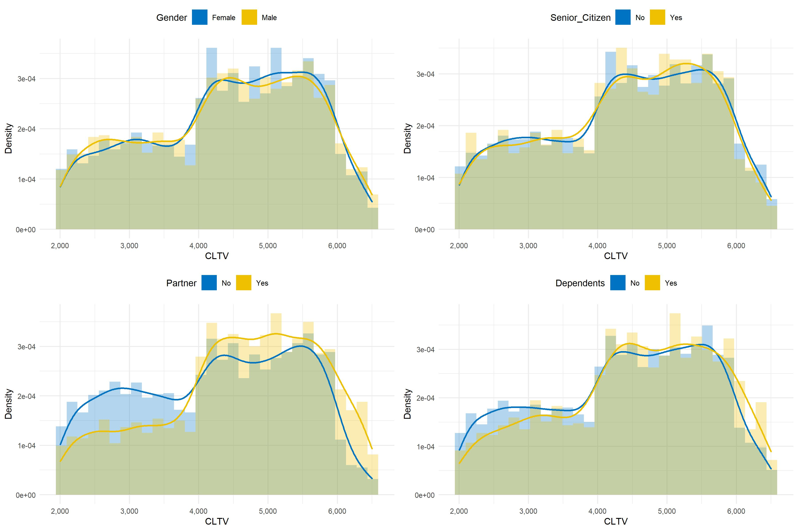
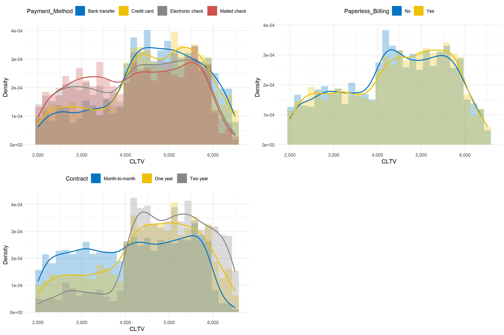
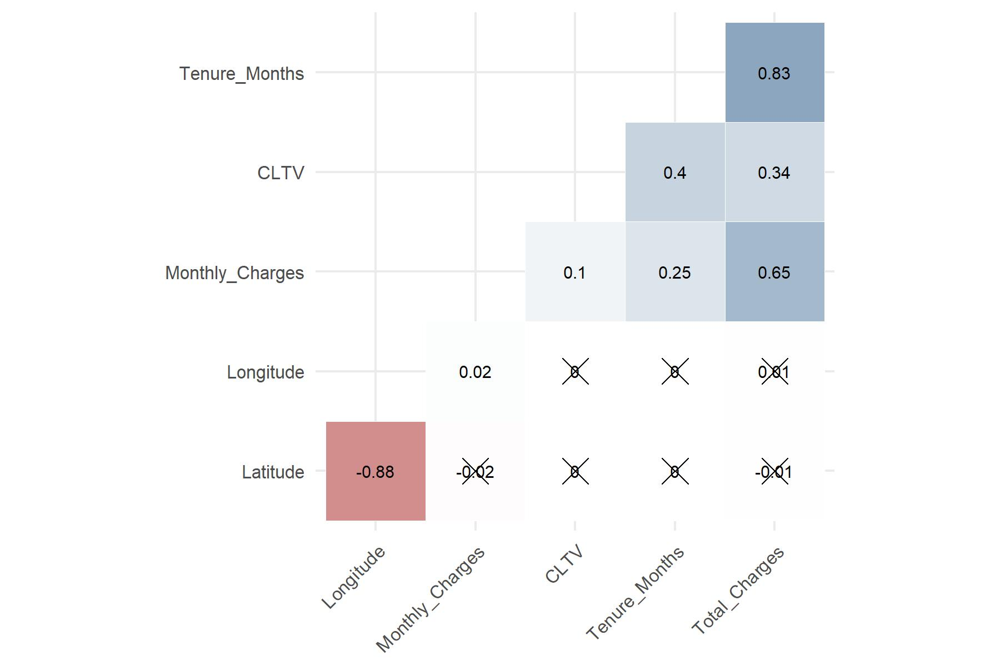

4.3 CLTV: Customer Lifetime Value
In the dataset, the value of the fictional TSP’s customers is measured by the discrete quantitative variable called CLTV. In this context, it is decided to draw histogram and density plots related to CLTV depending on the three types of explanatory variables. Anova tests are also implemented to verify whether CLTV has different values in the treatment variables’ categories. Anova is a generalization of the Student’s t test allowing to compare more than two groups. The test’s statistic computes the ratio between variance between sample and variance within samples and is Fisher distributed. A low ratio indicates that there is no significant difference between the means of the samples being compared.
Demographic data
Based on the Anova tests’ results, Partner and Dependents seem to be statistically discriminant in terms of customer lifetime value which is not the case for Gender and Senior_Citizen.
| F statistic | Df1 | Df2 | p-value | |
|---|---|---|---|---|
| Partner | 139.76 | 1 | 7030 | 6e-32 |
| Dependents | 24.89 | 1 | 7030 | 6.2e-07 |
| Gender | 0.39 | 1 | 7030 | 5.3e-01 |
| Senior_Citizen | 0.09 | 1 | 7030 | 7.6e-01 |
The figure below illustrates how different CLV is between customers with a partner and those without, as well as between those with children or other dependents and those without. To put it another way, having a partner in life of dependents tends to increase customer lifetime value as shown by the last two plots.
Figure 4.4: Histogram and density plots of customer lifetime value depending on demographic information
Data on services subscribed
When one wants to identify factors influencing customer lifetime value, it is relevant to consider variables related to services subscribed by customers. The Anova tests’ results indicate that CLTV has significant different values in each group of all services related variables, except for Internet_Service. The most important difference can be noted for Online_Backup and Online_Security variables, whereas there is more homogeneity in the Phone_Service groups.
| F statistic | Df1 | Df2 | p-value | |
|---|---|---|---|---|
| Online_Backup | 138.57 | 1 | 7030 | 1.1e-31 |
| Online_Security | 138.21 | 1 | 7030 | 1.3e-31 |
| Device_Protection | 105.23 | 1 | 7030 | 1.6e-24 |
| Tech_Support | 101.85 | 1 | 7030 | 8.7e-24 |
| Streaming_Movies | 90.96 | 1 | 7030 | 2e-21 |
| Streaming_TV | 79.58 | 1 | 7030 | 5.8e-19 |
| Phone_Service | 3.65 | 1 | 7030 | 5.6e-02 |
| Multiple_Lines | 3.65 | 1 | 7030 | 5.6e-02 |
| Internet_Service | 0.56 | 2 | 7029 | 5.7e-01 |
From figure 4.5 one can note that subscribing to additional services like having multiple lines, online security and backup, device protection or using the streaming movie service significantly enhance customer lifetime value. These variables may be interesting predictors of CLTV in regression models.
Figure 4.5: Histogram and density plots of customer lifetime value depending on services subscribed
Customer account data
Table 4.7 depicts that CLTV is statistically different according to the type of contract and the payment method. However, paperless billing does not seem to influence customer lifetime value.
| F statistic | Df1 | Df2 | p-value | |
|---|---|---|---|---|
| Contract | 274.28 | 2 | 7029 | 2e-115 |
| Payment_Method | 52.66 | 3 | 7028 | 1.2e-33 |
| Paperless_Billing | 0.77 | 1 | 7030 | 3.8e-01 |
The three plots below provide details to previous results as it can be noticed that customers paying by credit card of bank transfer have higher CLV than those paying by e-check of mailed check. Besides, clients enrolled in one-year or two-year contracts have greater value to the firm than those who pay on a monthly basis.
Figure 4.6: Histogram and density plots of customer lifetime value depending on customer account data
Correlation between CLTV and explanatory quantitative variables
Plotting the correlation matrix allows to have an overview on the links between the dataset’s quantitative variables. The method used is the Pearson correlation coefficient which is defined as follows:
\[\begin{equation} \rho_{XY} = \frac{\text{cov}(X, Y)}{\sigma_X \sigma_Y} \tag{4.1} \end{equation}\]
where \(X\) and \(Y\) are two quantitative random variables, \(\text{cov}\) the covariance function and \(\sigma\) the standard deviation.
On figure 4.7, non-significant correlations are crossed-out. It can be noticed that CLTV has the strongest correlation with Tenure_Months (\(40\%\)), followed by Total_Charges (\(34\%\)) then Monthly_Charges (\(10\%\)).
Figure 4.7: Correlation plot
